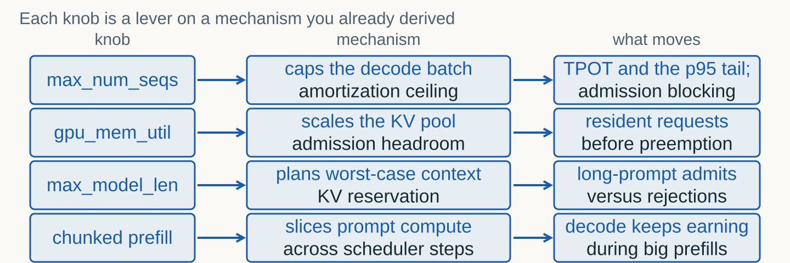
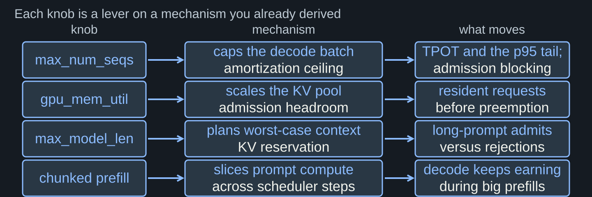
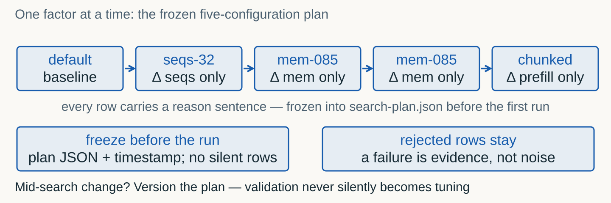
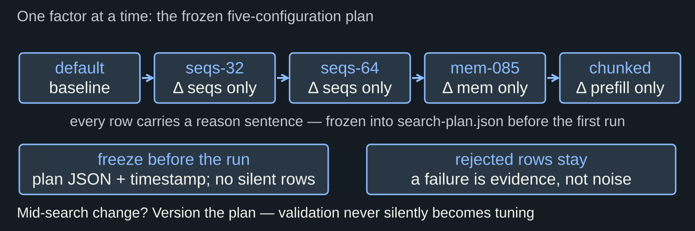
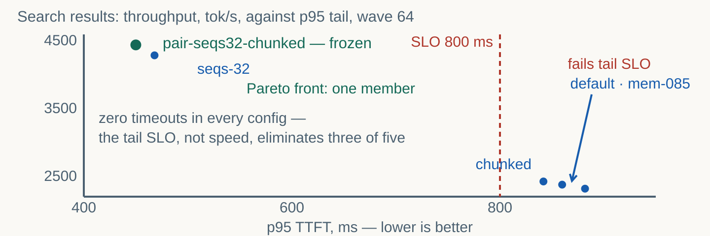
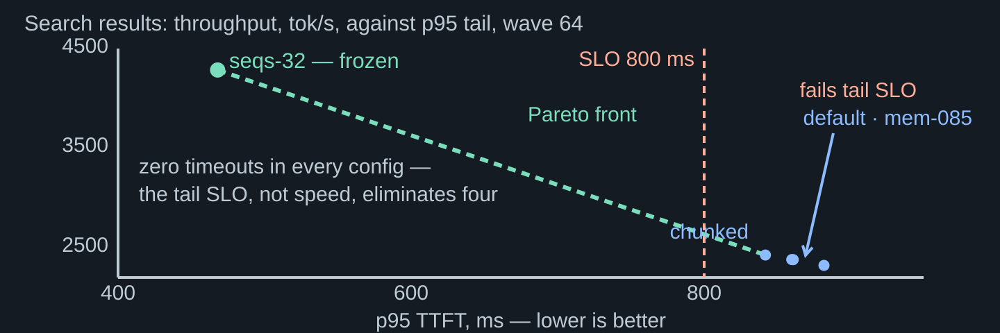

Four knobs, a bounded search, a frozen profile with proof.
You can read the saturation curve, find the knee, and defend an operating point. But the curve was a given.
The curve has knobs. Each one controls a mechanism you already explained in Topic 06 (batching, KV pool, prefill interference).


| Knob | Mechanism | What it trades |
|---|---|---|
--max-num-seqs | Ceiling on decode batch size | Amortization vs tail latency |
--gpu-memory-utilization | Share of VRAM for KV pool | More residents vs OOM risk |
--max-model-len | Declared context cap | Plan for worst case vs reject long |
| Chunked prefill | Slice large prefills | Decode not starved vs longer prefill |
Shorter TPOT ticks (fewer requests competing per step). But earlier admission blocking — the queue forms sooner.
Better weight amortization (more requests share each pass). But the tail grows: more concurrent decode work per step.
five declared configs, one run — read the record for numbers: cutting the cap beat default on both axes (default: 2377.1 tok/s, 860 ms). Cutting the cap shortened each request's queue wait so much that completed throughput rose.
The mock charges a quadratic queue penalty per effective batch; a real engine amortizes compute differently. Treat the direction as the lesson, not the magnitude.
Larger KV pool — more resident requests before preemption kicks in. The memory knee moves right.
More VRAM for activations and workspace. But the KV pool shrinks — preemption arrives earlier under load.
Any client may arrive with a long prompt. The scheduler plans for the worst case — reserved but possibly wasted.
Plan for what actually arrives. But a legitimate long prompt gets rejected — a product decision, not a tuning one.
A new request's prefill takes the whole step. Every resident request waits. TPOT jumps — the Topic 06 waterfall showed this.
The prefill is sliced across multiple steps. Decode keeps earning tokens. The cost: slightly longer total prefill latency.
4 knobs × several values each × 4 waves × 3 repeats = hundreds of GPU-hours. The budget is finite.
Enumerate a small space. One-factor-at-a-time first, then a confirmatory pair. Write the plan BEFORE running.
| Approach | Runs | What you learn |
|---|---|---|
| Full grid (3 values × 4 knobs) | 81 configs × 4 waves × 3 repeats = 972 runs | Interactions — at a budget nobody has |
| One-factor-at-a-time | 1 baseline + 4 single-factor moves = 5 configs × 4 waves | Each knob's isolated direction and magnitude |
| Confirmatory pair (optional) | +1 config combining the two best moves | Whether the wins compound or cancel |


| Config | seqs | mem | chunked | Reason |
|---|---|---|---|---|
| default | 256 | 0.9 | no | Baseline: vLLM defaults |
| seqs-32 | 32 | 0.9 | no | Sacrifice amortization for tail |
| pair-seqs32-chunked | 32 | 0.9 | yes | Confirmatory pair: main effect + prefill slicing |
| mem-085 | 256 | 0.85 | no | Free VRAM for activations |
| chunked | 256 | 0.9 | yes | Protect decode from prefill |
The leaderboard takes the geometric mean of throughput at waves 32 and 64 — tuning for wave 128 alone optimizes a number nobody scores.
Wave 64 sits where the interesting behavior lives for this workload. Wave 128 is retained: does the config move where collapse begins?


One config is fastest but has the longest tail. Another is gentle but slow. The front is the set where nothing dominates.
Not "highest throughput" but "highest throughput that still clears the SLO." The front shows the trade; the SLO is your value judgement.
Fastest SLO-eligible front point in the recorded run. Forecast written before held-out: p95 well below the 800 ms tail SLO.
Declared synthetic V-set, frozen profile, one run: 4426.9 tok/s, p95 454 ms, zero timeouts. The forecast survived contact with new data.
Same waves, same SLO, same journal fields. New texts from the V-split. One run. No policy change.
Accept: clears SLO on new data. Reject: fails. Inconclusive: cannot distinguish healthy from lucky.
| Verdict | Meaning | Obligation |
|---|---|---|
| Accept | Clears SLO on new texts | Ship the profile; keep the journal as provenance |
| Reject | Fails SLO on new texts | Back to the search table — the forecast was wrong, name the mechanism |
| Inconclusive | Cannot separate healthy from lucky | More data or a tighter SLO — never a silent re-roll |
Longest prompt in the corpus (817 tokens) against the smallest KV pool (mem 0.70). Served or rejected? The answer maps the failure boundary BEFORE production finds it.
Trigger (metric + threshold + duration), action (revert / shed / page), evidence (what the on-call checks at 3 a.m.). Three TODOs, three sentences, zero dashboards invented.
| Engine | Key strength | When to choose |
|---|---|---|
| vLLM | Open, community-driven, broad model support | Default choice; this course |
| SGLang | RadixAttention prefix caching, structured gen | Chat-heavy, prompt-reuse workloads |
| TensorRT-LLM | NVIDIA-optimized, highest single-GPU perf | Pure NVIDIA, latency-critical |
| DeepInfer (Apache-2.0) | Custom MLA/GEMM kernels, async scheduler, MoE | DeepSeek models, SM100/Ascend |
| TGI (Hugging Face) | Easy deployment, broad compatibility | Quick prototyping, HF ecosystem |
SGLang calls it max-running-requests; TensorRT-LLM folds it into max_batch_size; TGI speaks of max_concurrent_requests. The batching economy is the same equation.
Defaults, kernel efficiency, and which trade-offs are exposed. Porting a profile means re-deriving the knee on the new engine — never copying numbers.
Queue penalty, prefill rate and per-token cost are written in the notebook and calibrated once. It exists so the METHOD runs in minutes on CPU.
Kernel realities, preemption storms, allocator fragmentation. That is what the GPU profile is for — same notebook, same protocol, measured numbers.
A Triton candidate raised speed but failed the quality gate. It stays rejected — the search table keeps the row with its numbers and the one-sentence why.
Speed, tail, errors, quality, cost. A knob that wins on one axis and loses on another is not a win; it is a trade the product owner must sign.
Declare the space. Keep the failures. Freeze the choice. Let held-out judge.